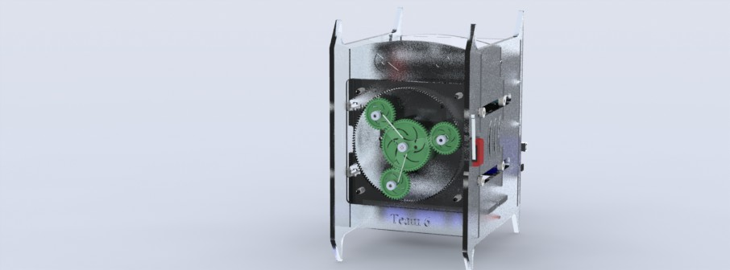

Window Washing Robot Spring 2013
Background
RBE 2002 is a class at Worcester Polytechnic Institute called Robotics: Sensing. The goal of the class is to teach students about sensors and feedback control loops. As part of the final project for the class, students must create a window washing robot using tools learned in class and from the robotics lab at WPI.
Other Projects
Musical Robot 2014
Designed and built a research robot at the MIT Media Lab.
Enhancing Sixth Grade Education 2013
Conducted data-driven research and increased student's test scores.
CHT4 Corp. 2013
Developed a variety of small engineering projects for a startup.
ABB, Ltd. 2013
Developed a variety of small engineering projects for a startup.
Window Washing Robot 2013
Designed a robot with a team for a challenge at WPI.
SolidWorks Corp. 2011
Designed and built components for innovative marketing campaign.
Acton Robotics Team 2011
Founded a robotics team in high school to participate in FIRST.
Background
RBE 2002 is a class at Worcester Polytechnic Institute called Robotics: Sensing. The goal of the class is to teach students about sensors and feedback control loops. As part of the final project for the class, students must create a window washing robot using tools learned in class and from the robotics lab at WPI.
Project
I built this robot was with two other robotics engineers at WPI, Ayesha Fathima and Wut Yee Oo, for a class called RBE 2002. The challenge for the class was to build a robot to clean windows on high-rise buildings while applying a constant pressure against the window surface as it moved about.
We opted for a novel design, scrapping the linear, back-and-forth motions everyone else used, and instead integrating a rotating planetary gear set on the front of the robot. Since the moving parts on our robot moved with constant rotational velocity, there was no overall torque applied on the robot so there was very little shakiness as the robot washed. Because of how elegantly and uniquely it completed the challenge, we had the honor of the WPI robotics lab preserving our robot in a glass case at the end of the year.

Cross-sectional view of the robot's internals.
The robot is constructed of laser-cut acrylic pieces Wut Yee and I designed in SolidWorks and held together with bolts. The sensors and gears used are part of the Vex consctruction set and include two limit switches, a pushbutton, a linear potentiometer, and an encoder. The software PID controller was programmed into an Arduino microcontroller by all three of us.
First physical prototype built of laser-cut acrylic.
The following year, we were delighted to find that our design had inspired a new generation of window washing robots which used planetary gears for enhanced washing.